Regression (L3&4)
This chapter contains the content of the third and fourth Monday lecture of the course BIO144 Data Analysis in Biology at the University of Zurich. When
Introduction
Linear regression is a common statistical method that models the relationship between a dependent (response) variable and one or more independent (explanatory) variables. The relationship is modeled with the equation for a straight line (\(y = a + bx\)).
With linear regression we can answer questions such as:
- How does the dependent (response) variable change with respect to the independent (explanatory) variable?
- What amount of variation in the dependent variable can be explained by the independent variable?
- Is there a statistically significant relationship between the dependent variable and the independent variable?
- Does the linear model fit the data well?
In this chapter / lesson we will explore what is linear regression and how to use it to answer these questions. We’ll cover the following topics:
- Why use linear regression?
- What is the linear regression model?
- Fitting the regression model (= finding the intercept and the slope).
- Is linear regression a good enough model to use?
- What do we do when things go wrong?
- Transformation of variables/the response.
- Identifying and handling odd data points (aka outliers).
In this chapter / lesson we will not discuss the statistical significance of the model. We will cover this topic in the next chapter / lesson.
Why use linear regression?
- It’s a good starting point because it is a relatively simple model.
- Relationships are sometimes close enough to linear.
- It’s easy to interpret.
- It’s easy to use.
- It’s actually quite flexible (e.g. can be used for non-linear relationships, e.g., a quadratic model is still a linear model!!! See Section 5.).
An example - blood pressure and age
There are lots of situations in which linear regression can be useful. For example, consider hypertension. Hypertension is a condition in which the blood pressure in the arteries is persistently elevated. Hypertension is a major risk factor for heart disease, stroke, and kidney disease. It is estimated that hypertension affects about 1 billion people worldwide. Hypertension is a complex condition that is influenced by many factors, including age. In fact, it is well known that blood pressure increases with age. But how much does blood pressure increase with age? This is a question that can be answered using linear regression.
Here is an example of a study that used linear regression to answer this question: https://journals.lww.com/jhypertension/fulltext/2021/06000/association_of_age_and_blood_pressure_among_3_3.15.aspx
In this study, the authors used linear regression to model the relationship between age and blood pressure. They found that systolic blood pressure increased by 0.28–0.85 mmHg/year. This is a small increase, but it is statistically significant. This means that the observed relationship between age and blood pressure is unlikely to be due to chance.
Lets look at some simulated example data:
Well, that is pretty conclusive. We hardly need statistics. There is a clear positive relationship between age and systolic blood pressure. But how can we quantify this relationship? And in less clear-cut cases what is the strength of evidence for a relationship? This is where linear regression comes in. Linear regression models the relationship between age and systolic blood pressure. With linear regression we can answer the following questions:
- What is a good mathematical representation of the relationship?
- Is the relationship different from what we would expect if there were no relationship?
- How well does the mathematical representation match the observed values?
- How much uncertainty is there in any predictions?
Lets try to figure some of these out from the visualisation.
Think, Pair, Share (#guess-params)
- Make a guess of the slope.
- Make a guess of the intercept (hint be careful, lots of people get this wrong).
Regression from a mathematical perspective
Given an independent/explanatory variable (\(X\)) and a dependent/response variable (\(Y\)) all points \((x_i,y_i)\), \(i= 1,\ldots, n\), on a straight line follow the equation
\[y_i = \beta_0 + \beta_1 x_i\ .\]
- \(\beta_0\) is the intercept - the value of \(Y\) when \(x_i = 0\)
- \(\beta_1\) the slope of the line, also known as the regression coefficient of \(X\).
- If \(\beta_0=0\) the line goes through the origin \((x,y)=(0,0)\).
- Interpretation of linear dependency: proportional increase in \(y\) with increase (decrease) in \(x\).
But a straight line cannot perfectly fit the data
The line is not a perfect fit to the data. There is scatter around the line.
Some of this scatter could be caused by other factors that influence blood pressure, such as diet, exercise, and genetics. Also, the there could be differences due to the measurement instrument (i.e., some measurement error).
These other factors are not included in the model (only age is in the model), so they create variation that can only appear in error term.
In the linear regression model the dependent variable \(Y\) is related to the independent variable \(x\) as
\[Y = \beta_0 + \beta_1 x + \epsilon \ \] where
- \(\epsilon\) is the error term
- \(\beta_0\) is the intercept
- \(\beta_1\) is the slope
- \(\epsilon\) is the error term.
The error term captures the difference between the observed value of the dependent variable and the value predicted by the model. The error term includes the effects of other factors that influence the dependent variable, as well as measurement error.
\[Y \quad= \quad \underbrace{\text{expected value}}_{E(Y) = \beta_0 + \beta_1 x} \quad + \quad \underbrace{\text{random error}}_{\epsilon} \ .\]
Graphically the error term is the vertical distance between the observed value of the dependent variable and the value predicted by the model.
The error term is also known as the residual. It is the variation that resides (is left over / is left unexplained) after accounting for the relationship between the dependent and independent variables.
Dealing with the error
If we use each of the observed residuals as the error for the respective data point, we end up with a perfect fit to the data. This is because the model is fitted to the data, so the residuals are the difference between the observed value of the dependent variable and the value predicted by the model. We then have a model with no error – everything is explained by the model. This is known as over-fitting. In fact, we have gained nothing by fitting the model, because we have not learned anything about the relationship between the dependent and independent variables. We have simply memorized / copied the data!!!
In order to avoid this, we need to assume something about the residuals – we need to model the error term. The most common model for the error term is normally distributed with mean 0 and constant variance.
\[\epsilon \sim N(0,\sigma^2)\]
This is known as the normality assumption. The normality assumption is important because it allows us to make inferences about the population parameters based on the sample data.
The linear regression model then becomes:
\[Y = \beta_0 + \beta_1 x + N(0,\sigma^2) \ \]
where \(\sigma^2\) is the variance of the error term. The variance of the error term is the amount of variation in the dependent variable that is not explained by the independent variable. The variance of the error term is also known as the residual variance.
An alternate and equivalent formulation is that \(Y\) is a random variable that follows a normal distribution with mean \(\beta_0 + \beta_1 x\) and variance \(\sigma^2\).
\[Y \sim N(\beta_0 + \beta_1 x, \sigma^2)\]
So, the answer to the question “how do we deal with the error term” is that we model the error term as normally distributed with mean 0 and constant variance. Put another way, the error term is assumed to be normally distributed with mean 0 and constant variance.
Back to blood pressure and age
The mathematical model in this case is:
\[SystolicBP = \beta_0 + \beta_1 \times Age + \epsilon\]
where: SystolicBP is the dependent (response) variable, \(\beta_0\) is the intercept, \(\beta_1\) is the coefficient of Age, Age is the independent (explanatory) variable, \(\epsilon\) is the error term.
Let’s ensure we understand this, by thinking about the units of the variables in this model. This can be very useful because it can help us to understand the model better and to check that the model makes sense.
Think, pair, share (#what-units)
- What are the units of blood pressure?
- What are the units of age?
- What are the units of the intercept?
- What are the units of the coefficient of Age?
- What are the units of the error term?
We can easily guess that the coefficient of Age is positive, because blood pressure tends to increase with age. But what is the most likely value of this coefficient? We need to estimate the coefficient of Age from the data. This is what linear regression does. It estimates the coefficients (intercept and slope) of the independent variables in the model.
Finding the intercept and the slope
In a regression analysis, one task is to estimate the intercept and the slope. These are known as the regression coefficients \(\beta_0\), \(\beta_1\). (We also estimate the residual variance \(\sigma^2\).)
Problem: For more than two points \((x_i,y_i)\), \(i=1,\ldots, n\), there is generally no perfectly fitting line.
Aim: We want to estimate the parameters \((\beta_0,\beta_1)\) of the best fitting line \(Y = \beta_0 + \beta_1 x\).
Idea: Find the best fitting line by minimizing the deviations between the data points \((x_i,y_i)\) and the regression line. I.e., minimising the residuals.
But which deviations?
These ones?
Or these?
Or maybe even these?
Well, actually its none of these!!!
Least squares
For multiple reasons (theoretical aspects and mathematical convenience), the intercept and slope are estimated using the least squares approach. In this, yet something else is minimized:
The parameters \(\beta_0\) and \(\beta_1\) are estimated such that the sum of squared vertical distances (sum of squared residuals / errors) is minimised.
SSE means Sum of Squared Errors:
\[SSE = \sum_{i=1}^n e_i^2 \]
where,
\[e_i = y_i - \underbrace{(\beta_0 + \beta_1 x_i)}_{=\hat{y}_i} \] Note: \(\hat y_i = \beta_0 + \beta_1 x_i\) are the predicted values.
In the graph just below, one of these squares is shown in red.
Least squares estimates
With a linear model, we can calculate the least squares estimates of the parameters \(\beta_0\) and \(\beta_1\) directly using the following formulas.
For a given sample of data \((x_i,y_i), i=1,..,n\), with mean values \(\overline{x}\) and \(\overline{y}\), the least squares estimates \(\hat\beta_0\) and \(\hat\beta_1\) are computed as
\[ \hat\beta_1 = \frac{\sum_{i=1}^n (y_i - \overline{y}) (x_i - \overline{x})}{ \sum_{i=1}^n (x_i - \overline{x})^2 } = \frac{cov(x,y)}{var(x)}\]
\[\hat\beta_0 = \overline{y} - \hat\beta_1 \overline{x} \]
Moreover,
\[ \hat\sigma^2 = \frac{1}{n-2}\sum_{i=1}^n e_i^2 \quad \text{with residuals } e_i = y_i - (\hat\beta_0 + \hat\beta_1 x_i) \]
is an unbiased estimate of the residual variance \(\sigma^2\).
(Derivations of the equations above are in the Stahel script 2.A b. Hint: differentiate, set to zero, solve.)
Why division by \(n-2\) ensures an unbiased estimator
When estimating parameters (\(\beta_0\) and \(\beta_1\)), the square of the residuals is minimised. This fitting process inherently uses up two degrees of freedom, as the model forces the residuals to sum to zero and aligns the slope to best fit the data. I.e., one degree of freedom is lost due to the estimation of the intercept, and another due to the estimation of the slope.
The adjustment (division by \(n-2\) instead of \(n\)) compensates for the loss of variability due to parameter estimation, ensuring the estimator of the residual variance is unbiased. Mathematically, dividing by n - 2 adjusts for this loss and gives an accurate estimate of the population variance when working with sample data.
We’ll look at degrees of freedom in more detail later, so don’t worry if this is a bit confusing right now.
Let’s do it in R
First we read in the dataset:
bp_age_data <- read.csv("data/Simulated_Blood_Pressure_and_Age_Data.csv")The we make a graph of the data:
Then we make the linear model, using the lm() function:
Then we can look at the summary of the model. It contains a lot of information, so can be a bit confusing at first.
Call:
lm(formula = Systolic_BP ~ Age, data = bp_age_data)
Residuals:
Min 1Q Median 3Q Max
-13.2195 -3.4434 -0.0808 3.1383 12.6025
Coefficients:
Estimate Std. Error t value Pr(>|t|)
(Intercept) 98.96874 1.46102 67.74 <2e-16 ***
Age 0.82407 0.02771 29.74 <2e-16 ***
---
Signif. codes: 0 '***' 0.001 '**' 0.01 '*' 0.05 '.' 0.1 ' ' 1
Residual standard error: 4.971 on 98 degrees of freedom
Multiple R-squared: 0.9002, Adjusted R-squared: 0.8992
F-statistic: 884.4 on 1 and 98 DF, p-value: < 2.2e-16How do our guesses of the intercept and slope compare to the guesses we made earlier?
Recal that the units of the Age coefficient are in mmHg per year. This means that for each additional year of age, the systolic blood pressure increases by ´r round(coef(bp_age_model)[2],2)´ mmHg.
Is the model good enough to use?
- All models are wrong, but is ours good enough to be useful?
- Are the assumption of the model justified?
- It would be very unwise to use the model before we know if it is good enough to use.
- Don’t jump out of an aeroplane until you know your parachute is good enough!
What assumptions do we make?
We already heard about one. We assume that the residuals follow a \(N(0,\sigma^2)\) distribution. We make this assumption because it is often well enough met, and it gives great mathematical tractability.
This assumption implies that:
- The \(\epsilon_i\) are normally distributed.
- All \(\epsilon_i\) have the same variance: \(Var(\epsilon_i)=\sigma^2\).
- The \(\epsilon_i\) are independent of each other.
Furthermore:
- we assumed a linear relationship.
- implies there are no outliers (implied by (a) above)
Lets go through each five assumptions.
(a) Normally distributed residuals
What does this mean? How can we check it?
A normal distribution is symmetric and bell-shaped…
Lets look at the frequency distribution of the residuals of the linear regression of blood pressure and age:
The normal distribution assumption (a) seems ok as well.
(a) Normally distributed residuals: The QQ-plot
Usually, not the histogram of the residuals is plotted, but the so-called quantile-quantile (QQ) plot. The quantiles of the observed distribution are plotted against the quantiles of the respective theoretical (normal) distribution:
If the points lie approximately on a straight line, the data is fairly normally distributed.
This is often “tested” by eye, and needs some experience.
But what on earth is a quantile???
Imagine we make 21 measures of something, say 21 blood pressures:
The median of these is 127.8. The median is the 50% or 0.5 quantile, because half the data points are above it, and half below.
50%
127.8 The theoretical quantiles come from the normal distribution. The sample quantiles come from the distribution of our residuals.
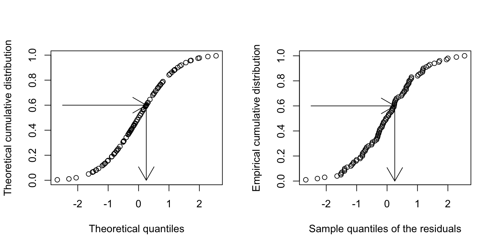
How do I know if a QQ-plot looks “good”?
There is no quantitative rule to answer this question. Instead experience is needed. You can gain this experience from simulations. To this end, we can generate the same number of data points of a normally distributed variable and compare this simulated qqplot to our observed one.
Example: Generate 100 points \(\epsilon_i \sim N(0,1)\) each time:
Each of the graphs above has data points that are randomly generated from a normal distribution. In all cases the data points are close to the line. This is what we would expect if the data were normally distributed. The amount of deviation from the line is what we would expect from random variation, and so seeing this amount of variation in a QQ-plot of your model should not be cause for concern.
(b) Equal variance (homoscedasticity)
Basically, we’re interested if the size of the residuals tends to show a pattern with the fitted values. By size of the residuals we mean the absolute value of the residuals.
We have assumed that there is no relationship between the residuals and the fitted values.
That is, variance of the residuals is a constant: \(\text{Var}(\epsilon_i) = \sigma^2\). And not, for example \(\text{Var}(\epsilon_i) = \sigma^2 \cdot x_i\).
So we’re going to plot the size of the residuals against the fitted values.
This graph is known as the scale-location plot. It is particularly suited to check the assumption of equal variances (homoscedasticity / Homoskedastizität).
The idea is to plot the square root of the (standardized) residuals \(\sqrt{|R_i|}\) against the fitted values \(\hat{y_i}\). There should be no trend:
How it looks with the variance increasing with the fitted values
Here’s a graphical example of how it would look if the variance of the residuals increases with the fitted values.
First here is a graph of the relationship:

And here the scale-location plot for a linear model of that data:
(c) Independence (the \(\epsilon_i\) are independent of each other)
We assume that the residuals are independent of each other. This means that the value of one residual is not somehow related to the value of another.
The dataset about blood pressure we looked at contained 100 observations, each one made from a different person. In such a study design, we could be safe in the assumption that the people are independent, and therefore the assumption that the residuals are independent.
Imagine, however, if we had 100 observations of blood pressure collected from 50 people, because we measured the blood pressure of each person twice. In this case, the residuals would not be independent, because two measures of the blood pressure of the same person are likely to be similar. A person is likely to have a high blood pressure in both measurements, or a low blood pressure in both measurements. This would mean they have a high residual in both measurements, or a low residual in both measurements.
In this case, we would need to account for the fact that the residuals are not independent. We would need to use a more complex model, such as a mixed effects model, to account for the fact that the residuals are not independent. We will talk about this again in the last week of this course.
In general, you should always think about the study design when you are analysing data. You should always think about whether the residuals are likely to be independent of each other. If they are not, you should think about how you can account for this in your analysis.
A good way to assess if there could be dependencies in the residuals is to be critical about what is the unit of observation in the data. In the blood pressure example, the unit of observation is the person. Count the number of persons in the study. If there are fewer persons than observations, then at least some people must have been measured at least twice. Repeating measures on the same person is a common way to get dependent residuals.
So, to check the assumption of independence, you should:
- Think carefully about the study design.
- Think carefully about the unit of observation in the data.
- Compare the number of observations to the number of units of observation.
(d) Linearity assumption
The linearity assumption states that the relationship between the independent variable and the dependent variable is linear. This means that the dependent variable changes by a constant amount for a one-unit change in the independent variable. And that this slope is does not change with the value of the independent variable.
The blood pressure data seems to be linear:

In contrast, look at this linear regression through data that appears non-linear:
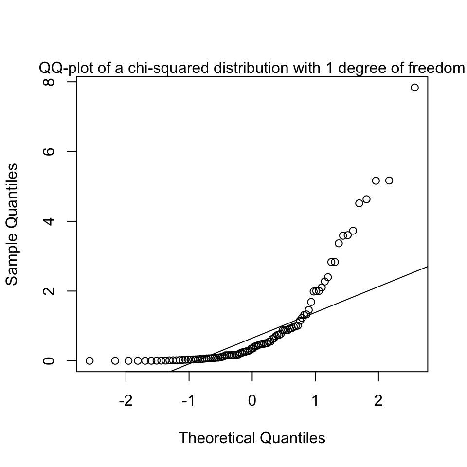
And with the residuals shown as red lines:
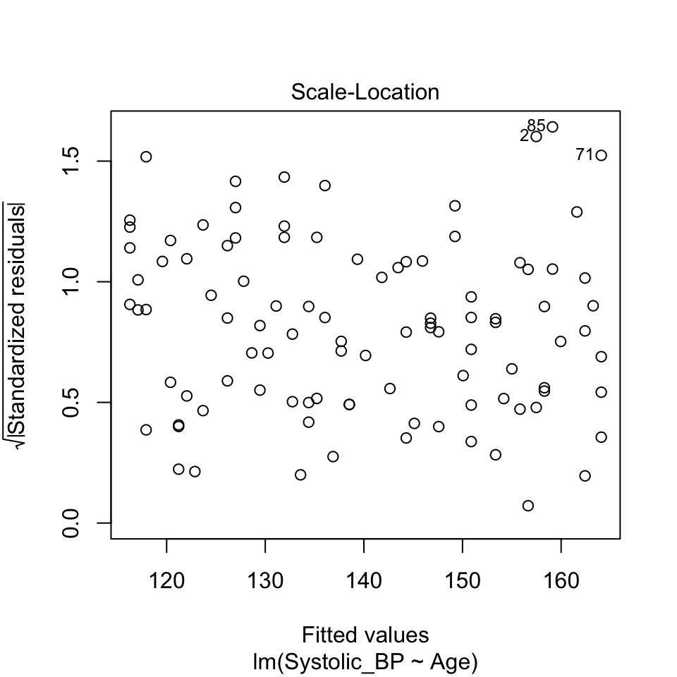
At low values of \(y\), the residuals are positive, at intermediate values of \(y\) the residuals are negative, and at high values of \(y\) the residuals are positive. This pattern in the residuals is a sign that the relationship between \(x\) and \(y\) is not linear.
We can plot the value of the residuals against the \(y\) value directly, instead of looking at the pattern in the graph above. This is called a Tukey-Anscombe plot. It is a graph of the residuals versus the fitted \(y\) values.
We can very clearly see pattern in the residuals in this Tukey-Anscombe plot. The residuals are positive, then negative, then positive, as the fitted \(y\) value gets larger.
The red line in the Tukey-Anscombe plot is a loess smooth. It is automatically added to the plot. It is a way of estimating the pattern in the residuals. If the red line is not flat, then there is a pattern in the residuals. However, the loess smooth is not always reliable. It is a good idea to look at the residuals directly, without this smooth.
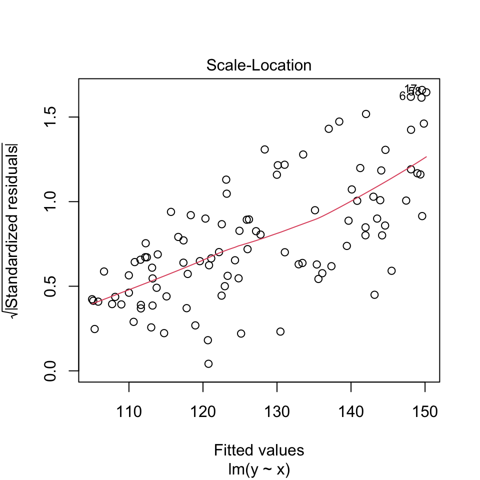
The data here is simulated to show a very clear pattern in the residuals. In real data, the pattern might not be so clear. But if you suspect you see a pattern in the residuals, it could be a sign that the relationship between the independent and dependent variable is not linear.
Here is the Tukey-Anscombe plot for the blood pressure data:

There is very little evidence of any pattern in the residuals. This data is simulated with a truly linear relationship, so we would not expect to see any pattern in the residuals.
(e) No outliers
An outlier is a data point that is very different from the other data points. Outliers can have a big effect on the results of a regression analysis. They can pull the line of best fit towards them, and make the line of best fit a poor representation of the data.
Lets again look at the blood pressure versus age data:
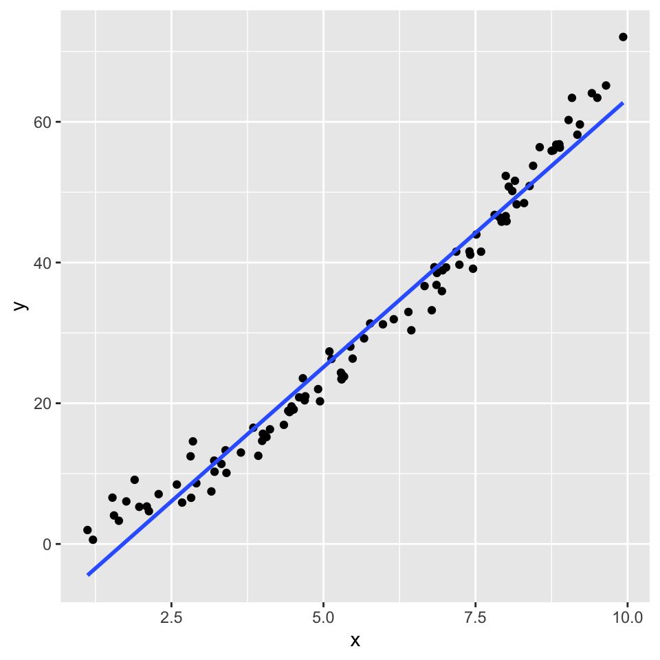
There are no obvious outliers in this data. The data points are all close to the line of best fit. This is a good sign that the line of best fit is a good representation of the data.
Think, Pair, Share (#odd-data)
Where on this graph would you expect to see particularly influential outliers? Influential in the sense that they would have a large effect on the slope of the line of best fit.
Data points that are far from the mean of the independent variable have a large effect on the value of the slope. These data points have a large leverage. They are data points that are far from the other data points in the \(x\) direction.
We can think of this with the analogy of a seesaw. The slope of the line of best fit is like the pivot point of a seesaw. Data points that are far from the pivot point have a large effect on the slope. Data points that are close to the pivot point have a small effect on the slope.
A measure of distance from the pivot point is called the \(leverage\) of a data point. In simple regression, the leverage of individual \(i\) is defined as
\(h_{i} = (1/n) + (x_i-\overline{x})^2 / SSX\).
where \(SSX = \sum_{i=1}^n (x_i - \overline{x})^2\). (Sum of Squares of \(X\))
So, the leverage of a data point is inversely related to \(n\) (the number of data points). The leverage of a data point is also inversely related to the sum of the squares of the \(x\) values. The leverage of a data point is directly related to the square of the distance of the \(x\) value from the mean of the \(x\) values.
More intuitively perhaps, the leverage of a data point will be greater when the are fewer other data points. It will also be greater when the distance from the mean value of \(x\) is greater.
Going back to the analogy of a seesaw, with data points as children on the seesaw, the leverage of a data point is like the distance from the pivot a child sits. But we also have children of different weights. A lighter child will have less effect on the tilt of the seesaw. A heavier one will have a greater effect on the tilt. A heavier child sitting far from the pivot will have a very large effect.
Think, Pair, Share (#like-weight)
What quantity that we already experienced is like the weight of the child?
The size of the residuals are like the weight of the child. Data points with large residuals have a large effect on the slope of the line of best fit. Data points with small residuals have a small effect on the slope of the line of best fit.
So the overall effect of a data point on the slope of the line of best fit is a combination of the leverage and the residual. This quantity is called the \(influence\) of a data point.
Lets add a rather extreme data point to the blood pressure versus age data:
This is a bit ridiculous, but it is a good example of an outlier. The data point is far from the other data points. It has a large residual. And it is a long way from the pivot (the middle of the \(x\) data) so has large leverage.
We can make a histogram of the residuals and see that the outlier has a large residual:
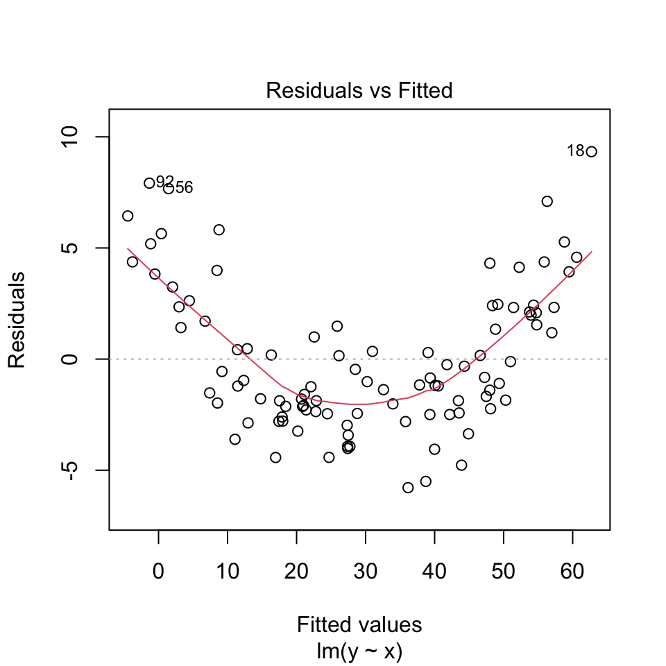
And we can see that the leverage is large.
There is a graph that we can look at to see the influence of a data point. This is called a \(Cook's\) \(distance\) plot. The Cook’s distance of a data point is a measure of how much the slope of the line of best fit changes when that data point is removed. The Cook’s distance of a data point is defined as
\(D_i = \sum_{j=1}^n (\hat{y}_j - \hat{y}_{j(i)})^2 / (p \times MSE)\).
where \(\hat{y}_j\) is the predicted value of the dependent variable for data point \(j\), \(\hat{y}_{j(i)}\) is the predicted value of the dependent variable for data point \(j\) when data point \(i\) is removed, \(p\) is the number of parameters in the model (2 in this case), \(MSE\) is the mean squared error of the model.
But does it have a large influence on the value of the slope?
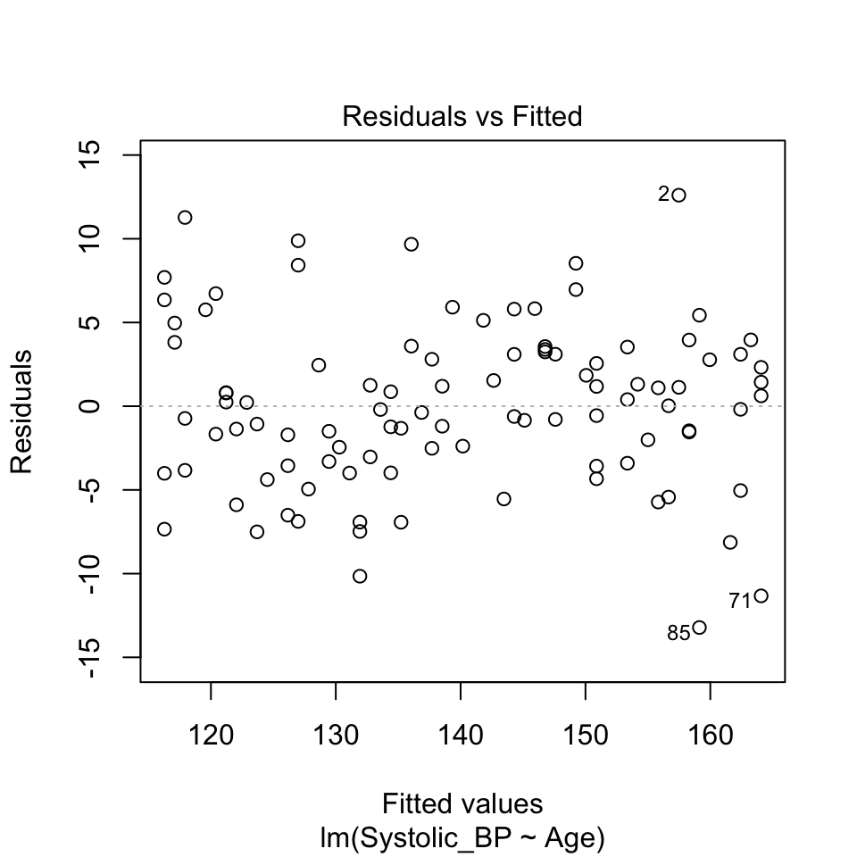
The outlier has a large leverage. It is far from the pivot. But it does not have such a large effect (influence) on the slope. This is in large part because there are a lot data points (100) that are quite tightly arranged around the regression line.
Graphical illustration of the leverage effect
Data points with \(x_i\) values far from the mean have a stronger leverage effect than when \(x_i\approx \overline{x}\):

The outlier in the middle plot “pulls” the regression line in its direction and has large influence on the slope.
Leverage plot (Hebelarm-Diagramm)
In the leverage plot, (standardized) residuals \(\tilde{R_i}\) are plotted against the leverage \(H_{ii}\) :

Critical ranges are the top and bottom right corners!!
Here, observations 71, 85, and 87 are labelled as potential outliers.
Some texts will give a rule of thumb that points with Cook’s distances greater than 1 should be considered influential, while others claim a reasonable rule of thumb is \(4 / ( n - p - 1 )\) where \(n\) is the sample size, and \(p\) is the number of \(beta\) parameters.
What can go “wrong” during the modeling process?
Answer: a lot of things!
- Non-linearity. We assumed a linear relationship between the response and the explanatory variables. But this is not always the case in practice. We might find that the relationship is curved and not well represtented by a straight line.
- Non-normal distribution of residuals. The QQ-plot data might deviate from the straight line so much that we get worried!
- Heteroscadisticity (non-constant variance). We assumed homoscadisticity, but the residuals might show a pattern.
- Data point with high influence. We might have a data point that has a large influence on the slope of the line of best fit.
What to do when things “go wrong”?
- Now: Transform the response and/or explanatory variables.
- Now: Take care of outliers.
- Later in the course: Improve the model, e.g., by adding additional terms or interactions.
- Later in the course: Use another model family (generalized or nonlinear regression model).
Dealing with non-linearity
Here’s another example of \(y\) and \(x\) that are not linearly related:
One way to deal with this is to transform the response variable \(Y\). Here we try two different transformations: \(\log_{10}(Y)\) and \(\sqrt{Y}\).
Square root transform of the response variable \(Y\):
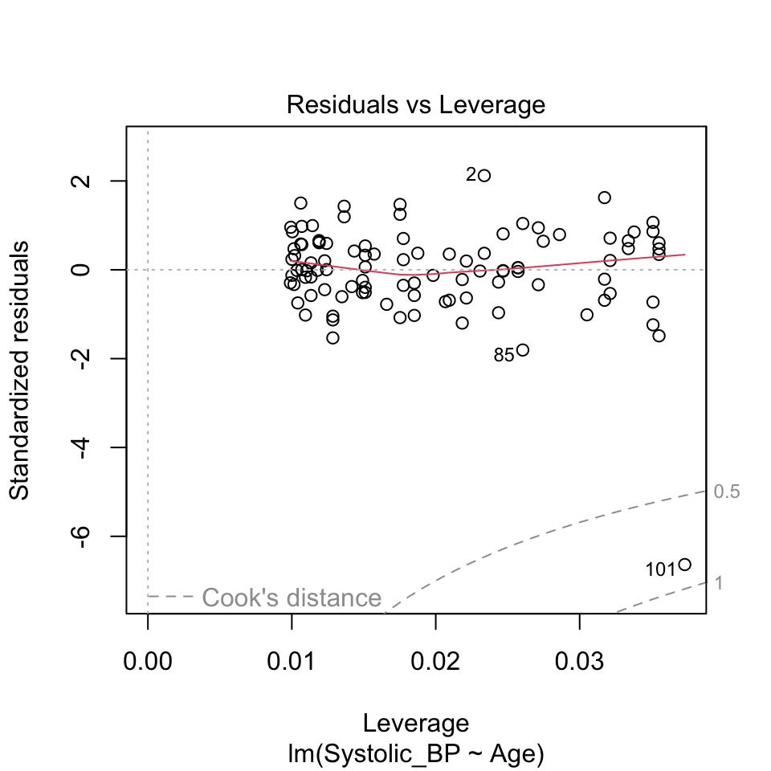
Not great.
Log transformation of the response variable \(Y\):
Nope. Still some evidence of non-linearity.
What about transforming the explanatory variable \(X\) as well?
Let’s look at the four diagnostic plots for the log-log-transformed data:
All looks pretty good. Pat on the back for us!
But… how to know which transformation to use…? It’s a bit of trial and error. But we can use the diagnostic plots to help us.
Very very important is that we do this trial and error before we start using the model. E.g., we don’t want to jump from the aeroplane and then find out that our parachute is not working properly! And then try to fix the parachute while we are falling….
Likewise, we must not start using the model and then try to fix it. We need to make sure our model is in good working order before we start using it.
One of the traps we could fall into is called “p-hacking”. This is when we try different transformation until we find one that gives us the result we want, for example significant relationship. This is a big no-no in statistics. We need to decide on the model (including any transformations) before we start using it.
Common transformations
Which transformations could be considered? There is no simple answer. But some guidelines. E.g. if we see non-linearity and increasing variance with increasing fitted values, then a log transform may improve matter.
Some common and useful transformations are:
- The log transformation for concentrations and absolute values.
- The square-root transformation for count data.
- The arcsin square-root \(\arcsin(\sqrt{\cdot})\) transformation for proportions/percentages.
Transformations can also be applied on explanatory variables, as we saw in the example above.
Outliers
What do we do when we identify the presence of one or more outliers?
- Start by checking the “correctness” of the data. Is there a typo or a decimal point that was shifted by mistake? Check both the response and explanatory variables.
- If not, ask whether the model could be improved. Do reasonable transformations of the response and/or explanatory variables eliminate the outlier? Do the residuals have a distribution with a long tail (which makes it more likely that extreme observations occur)?
- Sometimes, an outlier may be the most interesting observation in a dataset! Was the outlier created by some interesting but different process from the other data points?
- Consider that outliers can also occur just by chance!
- Only if you decide to report the results of both scenario can you check if inclusion/exclusion changes the qualitative conclusion, and by how much it changes the quantitative conclusion.
Removing outliers
It might seem tempting to remove observations that apparently don’t fit into the picture. However:
- Do this only with greatest care e.g., if an observation has extremely implausible values!
- Before deleting outliers, check points 1-5 above.
- When removing outliers, you must mention this in your report.
During the course we’ll see many more examples of things going at least a bit wrong. And we’ll do our best to improve the model, so we can be confident in it, and start to use it. Which we will start to do in the next lesson. But before we wrap up, some good news…
Its a kind of magic…
Above, we learned about linear regression, the equation for it, how to estimate the coefficients, and how to check the assumptions. There was a lot of information, and it might seem a bit overwhelming.
You might also be aware that there are quite a few other types of statistical model, such as multiple regression, t-test, ANOVA, two-way ANOVA, and ANCOVA. It could be worrying to think that you need to learn so much new information for each of these types of tests.
But this is where the kind-of-magic happens. The good news is that the linear regression model is a special case of what is called a general linear model, or just linear model for short. And that all the tests mentioned above are also types of linear model. So, once you have learned about linear regression, you have learned a lot about linear models, and therefore also a lot about all of these other tests as well.
Moreover, the same function in R ‘lm’ is used to make all those statistical models Awesome.
So what is a linear model?
A linear model is a model where the relationship between the dependent variable and the independent variables is linear. That is, the dependent variable can be expressed as a linear combination of the independent variables. An example of a linear model is:
\[y = \beta_0 + \beta_1 x_1 + \beta_2 x_2 + \ldots + \beta_p x_p + \epsilon\]
where: \(y\) is the dependent variable, \(\beta_0\) is the intercept, \(\beta_1, \beta_2, \ldots, \beta_p\) are the coefficients of the independent variables, \(x_1, x_2, \ldots, x_p\) are the independent variables, \(\epsilon\) is the error term.
In contrast, a non-linear model is a model where the relationship between the dependent variable and the independent variables is non-linear. An example of a non-linear model is the exponential growth model:
\[y = \beta_0 + \beta_1 e^{\beta_2 x} + \epsilon\]
where: y is the dependent variable, \(\beta_0\) is the intercept, \(\beta_1, \beta_2\) are the coefficients of the independent variables, \(x\) is the independent variable, \(\epsilon\) is the error term.
Keep in mind that a model with a quadratic term is still a linear model. For example:
\[y = \beta_0 + \beta_1 x_1 + \beta_2 x^2 + \epsilon\]
is still a linear model. We can see this if we substitute \(x^2\) with a new variable \(x_2\), where \(x_2 = x^2\). The model then becomes:
\[y = \beta_0 + \beta_1 x_1 + \beta_2 x_2 + \epsilon\]
This is clearly a linear model.
End of L3 / Start of L4
Regression continued
Overview of this week (L4)
Now that we have a satisfactory model, we can start to use it. In the following material, you will learn:
- How to measure how good is the regression (correlation and \(R^2\)).
- How to test if the parameter estimates are compatible with some specific value (\(t\)-test).
- How to find the range of parameters values are compatible with the data (confidence intervals).
- How to find the regression lines compatible with the data (confidence band).
- How to calculate plausible values of newly collected data (prediction band).
Accompanying reading material
How good is the regression model?
What would a good regression model look like? What would a bad one look like? One could say that a good regression model is one that explains the dependent variable well. But what could we mean by “explains the data well”?
Take these two examples.
Think, Pair, Share (#better-model)
In which of these two would you say the model is better, and in which is it worse?
The first model seems to fit the data well, while the second one does not. But how can we quantify this?
Let’s say that we will measure the goodness of the model by the amount of variability of the dependent variable that is explained by the independent variable. To do this we need to do the following:
- Measure the total variability of the dependent variable (total sum of squares, \(SST\)).
- Measure the amount of variability of the dependent variable that is explained by the independent variable (model sum of squares, \(SSM\)).
- Measure the variability of the dependent variable that is not explained by the independent variable (error sum of squares, \(SSE\)).
- Calculate the proportion of variability of the dependent variable that is explained by the independent variable (\(R^2\), pronounced as “r-squared”) (also known as the coefficient of determination) (\(R^2\) = \(SSM/SST\)).
Importantly, note that we will calculate \(SSM\) and \(SSE\) so that they sum up to \(SST\). I.e., \(SST = SSM + SSE\). That is, the total variability is the sum of what is explained by the model and what remains unexplained.
Let’s take each in turn:
\(SST\)
1. The total variability of the dependent variable is the sum of the squared differences between the dependent variable and its mean. This is called the total sum of squares (\(SST\)).
\[SST = \sum_{i=1}^{n} (y_i - \bar{y})^2\]
where: \(y_i\) is the dependent variable, \(\bar{y}\) is the mean of the dependent variable, \(n\) is the number of observations.
Note that sometimes \(SST\) is referred to as \(SSY\) (sum of squares of \(y\)).
Graphically, this is the sum of the square of the blue residuals as shown in the following graph, where the horizontal dashed line is at the value of the mean of the dependent variable.
We can calculate this in R as follows:
SST <- sum((y1 - mean(y1))^2)SSM and SSE
Now the next two steps, that is getting the model sum of squares (SSM) and the error sum of squares (SSE) are a bit more complicated. To do this we need to fit a regression model to the data. Let’s see this graphically, and divide the data into the explained and unexplained parts.
Make a graph with vertical lines connecting the data to the mean of the data, but with each line two parts, one from the mean to the data, and one from the data to the predicted value.
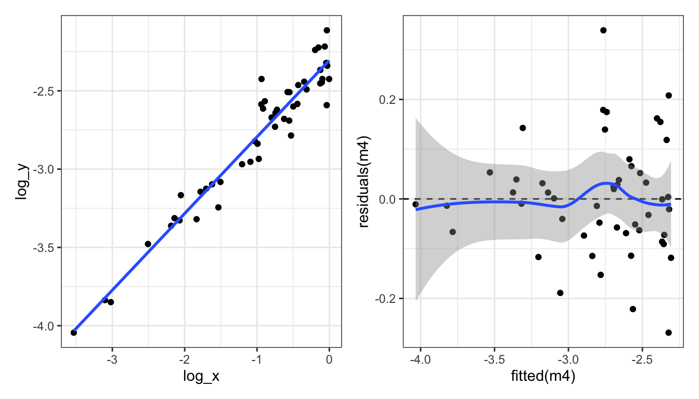
In this graph, the square of the length of the green lines is the model sum of squares (\(SST\)). The square of the length of the red lines is the error sum of squares (\(SSE\)).
In a better model the length of the green lines will be longer (the square of these gives the \(SMM\), the variability explained by the model). And the length of the red lines will be shorter (the square of these gives the \(SSE\), the variability not explained by the model).
\(SSM\)
Next we will do the second step, that is calculate the model sum of squares (\(SSM\)).
2. The amount of variability of the dependent variable that is explained by the independent variable is called the model sum of squares (\(SSM\)).
This is the difference between the predicted value of the dependent variable and the mean of the dependent variable, squared and summed:
\[SSE = \sum_{i=1}^{n} (\hat{y}_i - \bar{y})^2\]
where: \(\hat{y}_i\) is the predicted value of the dependent variable,
In R, we calculate this as follows:
m1 <- lm(y1 ~ x)
y1_predicted <- predict(m1)
SSM <- sum((y1_predicted - mean(y1))^2)
SSM[1] 306.4576\(SSE\)
Third, we calculate the error sum of squares (\(SSE\)) with either of two methods. We could calculate it as the sum of the squared residuals, or as the difference between the total sum of squares and the model sum of squares:
\[SSE = \sum_{i=1}^{n} (y_i - \hat{y}_i)^2 = SST - SSM\] Let’s calculate this in R uses both approaches:
SSE <- sum((y1 - y1_predicted)^2)
SSE[1] 8.163797Or…
SSE <- SST - SSM
SSE[1] 8.163797\(R^2\)
Finally, we calculate the proportion of variability of the dependent variable that is explained by the independent variable (\(R^2\)):
\[R^2 = \frac{SSM}{SST}\]
[1] 0.974052Is my R squared good?
What value of \(R^2\) is considered good? In ecological research, \(R^2\) values are often low (less than 0.3), because ecological systems are complex and many factors influence the dependent variable. However, in other fields, such as physiology, \(R^2\) values are often higher. Therefore, the answer of what values of \(R^2\) are good depends on the field of research.
Here are the four examples and their r-squared.
Questions
Think, Pair, Share (#what-minimised)
What is minimised when we fit a regression model? And therefore what is maximised?
How unlikey is the observed data given the null hypothesis?
(We often hear this expressed as “is the relationship significant?”)
What is a meaningful null hypothesis for a regression model?
Often we are interested in whether there is a relationship between the dependent and independent variable. Therefore, the null hypothesis is that there is no relationship between the dependent and independent variable. This means that the null hypothesis is that the slope of the regression line is zero.
Recall the regression model: \[y = \beta_0 + \beta_1 x + \epsilon\]
Think, Pair, Share (#null-hypothesis)
Write down the null hypothesis of no relationship between \(x\) and \(y\).
The null hypothesis is that the slope of the regression line is zero: \[H_0: \beta_1 = 0\]
What is the alternative hypothesis?
\[H_1: \beta_1 \neq 0\]
So, how do we test the null hypothesis?
Let’s use randomisation as a method to understand how likely we are to observe the data we have, given the null hypothesis is true.
If the null hypothesis is true, we expect no relationship between \(x\) and \(y\). Therefore, we can shuffle the \(y\) values and fit a regression model to the shuffled data. We can repeat this many times and calculate the slope of the regression line each time. This will give us a distribution of slopes we would expect to observe if the null hypothesis is true.
First, we’ll make some data and get the slope of the regression line. Here is the observed slope and relationship:
x
0.1251108 
Now we’ll use randomisation to test the null hypothesis. We can create lots of examples where the relationship is expected to have a slope of zero by shuffling randomly the \(y\) values. Here are 20:
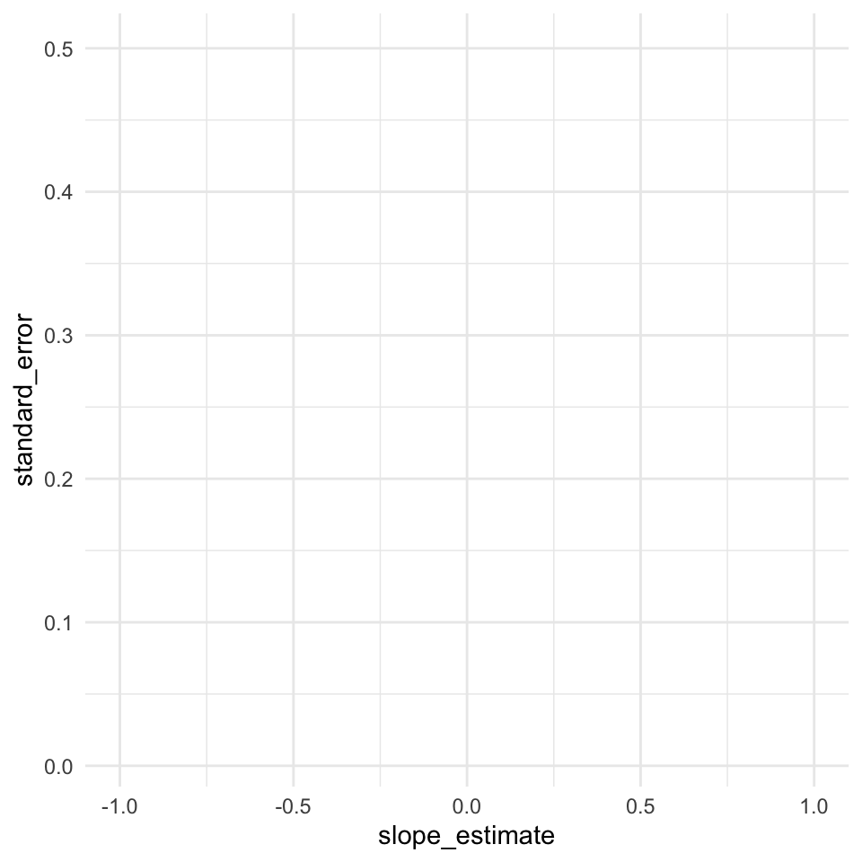
Now let’s create 19 and put the real one in there somewhere random. Here’s a case where the real data has a quite strong relationship:

We can confidently find the real data amont the shuffled data. But what if the relationship is weaker?

Now its less clear which is the real data. We can use this idea to test the null hypothesis.
We do the same procedure of but instead of just looking at the graphs, we calculate the slope of the regression line each time. This gives us a distribution of slopes we would expect to observe if the null hypothesis is true. We can then see where the observed slope lies in this distribution of null hypothesis slopes.

We can now calculate the probability of observing the data we have, given the null hypothesis is true.
[1] 0.0172When we do linear regression we usually don’t use this randomisation approach. Instead, we can use the fact that the the slope of the regression line is an estimate of the true slope. This estimate has uncertainty associated with it. We can use this uncertainty to calculate the probability of observing the data we have, given the null hypothesis is true.
We can see that the slope estimate (the \(x\) row) has uncertainty by looking at the regression output:
Estimate Std. Error
(Intercept) -0.3640385 1.842874
x 0.1251108 0.031682The estimate is the mean of the distribution of the parameter (slope) and the standard error is a measure of the uncertainty of the estimate.
The standard error is calculated as:
\[\sigma^{(\beta_1)} = \sqrt{ \frac{\hat\sigma^2}{\sum_{i=1}^n (x_i - \bar x)^2}}\]
Where \(\hat\sigma^2\) is the expected residual variance of the model. This is calculated as:
\[\hat\sigma^2 = \frac{\sum_{i=1}^n (y_i - \hat y_i)^2}{n-2}\]
Where \(\hat y_i\) is the predicted value of \(y_i\) from the regression model.
OK, let’s take a look at this intuitively. We have the the estimate of the slope and the standard error of the estimate.
Here is a graph of the value of the slope estimate versus the standard error of the estimate:
Think, Pair, Share (#chance-area)
In what areas of the graph is the slope estimate more likely to have been observed by chance? And what regions is it less likely to have been observed by chance?
When the slope estimate is larger, it is less likely to have been observed by chance. And when the standard error is larger, it is more likely to have been observed by chance. How can we put these together into a single measure?
If we divide the slope estimate by the standard error, we get a measure of how many standard errors the slope estimate is from the null hypothesis slope of zero. This is the \(t\)-statistic:
\[t = \frac{\hat\beta_1 - \beta_{1,H_0}}{\sigma^{(\beta_1)}}\]
Where \(\beta_{1,H_0}\) is the null hypothesis value of the slope, usually zero, so that
\[t = \frac{\hat\beta_1}{\sigma^{(\beta_1)}}\]
The \(t\)-statistic is a measure of how many standard errors the slope estimate is from the null hypothesis value of the slope. The larger the \(t\)-statistic, the less likely the slope estimate was observed by chance.
How can we transform the value of a \(t\)-statistic into a p-value? We can use the \(t\)-distribution, which quantifies the probability of observing a value of the \(t\)-statistic under the null hypothesis.
But what is the \(t\)-distribution? It is a distribution of the \(t\)-statistic under the null hypothesis. It is a bell-shaped distribution that is centered on zero. The shape of the distribution is determined by the degrees of freedom, which is \(n-2\) for a simple linear regression model.
By the way, it is named the \(t\)-distribution by it’s developer, William Sealy Gosset, who worked for the Guinness brewery in Dublin, Ireland. In his 1908 paper, Gosset introduced the \(t\)-distribution but he didn’t explicitly explain his choice of the letter \(t\). The choice of the letter \(t\) could be to indicate “Test”, as the \(t\)-distribution was developed specifically for hypothesis testing.
Now, recall that the p-value is the probability of observing the value of the test statistic (so here the \(t\)-statistic) at least as extreme as the one we have, given the null hypothesis is true. We can calculate this probability by integrating the \(t\)-distribution from the observed \(t\)-statistic to the tails of the distribution.
Here is a graph of the \(t\)-distribution with 100 degrees of freedom with the tails of the distribution shaded so that the area of the shaded region is 0.05 (i.e., 5% of the total area).
Graph of the \(t\)-distribution with 1000 degrees of freedom (blue line) and the normal distribution (green dashed line):

So, with a large number of observations, the \(t\)-distribution approaches the normal distribution. For the normal distribution, the 95% area is between -1.96 and 1.96.
## x value for 95% area of normal distribution
x_value <- qnorm(0.975)
x_value[1] 1.959964qnorm is a function that calculates the \(x\) value for a given quantile (probability) of the normal distribution. In simpler terms, it finds the value \(x\) at which the area under the normal curve (up to \(x\)) equals the given probability \(p\) (0.975 in the example immediately above here).
Let’s go back to the age - blood pressure data and calculate the p-value for the slope estimate.
Here’s the model:
mod1 <- lm(Systolic_BP ~ Age, data = bp_data)Here we calculate the \(t\)-statistic for the slope estimate:
And here we calculate the one-tailed and two-tailed \(p\)-values:
Age
3.746958e-51 Age
7.493917e-51 We can get the \(p\)-value directly from the summary function:
Estimate Std. Error t value Pr(>|t|)
8.240678e-01 2.770955e-02 2.973948e+01 7.493917e-51 Conclusion: there is very strong evidence that the blood pressure is associated with age, because the \(p\)-value is extremely small (thus it is very unlikely that the observed slope value or a large one would be seen if there was really no association). Thus, we can reject the null hypothesis that the slope is zero.
This basically answers question 1: “Are the parameters compatible with some specific value?”
Recap: Formal definition of the \(p\)-value
The formal definition of \(p\)-value is the probability to observe a data summary (e.g., an average or a slope) that is at least as extreme as the one observed, given that the null hypothesis is correct.
Example (normal distribution): Assume that we calculated that \(t\)-value = -1.96
\(\Rightarrow\) \(Pr(|t|\geq 1.96)=0.05\) and \(Pr(t\leq-1.96)=0.025\).
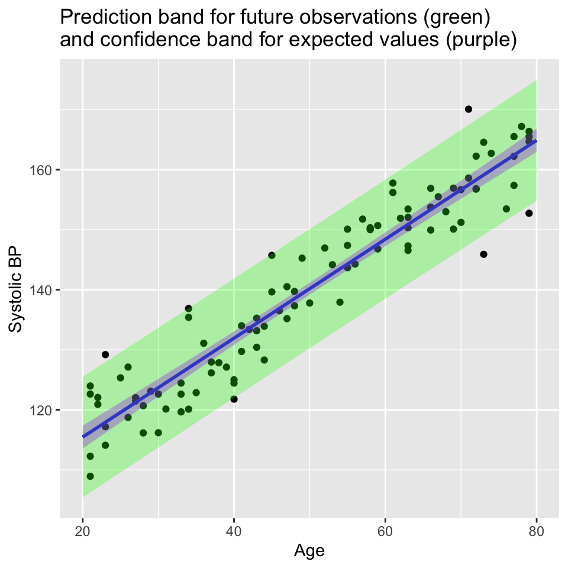
A cautionary note on the use of \(p\)-values
Maybe you have seen that in statistical testing, often the criterion \(p\leq 0.05\) is used to test whether \(H_0\) should be rejected. This is often done in a black-or-white manner. However, we will put a lot of attention to a more reasonable and cautionary interpretation of \(p\)-values in this course!
How strong is the relationship?
The actual value of the parameter has practical meaning. The slope of the regression line tells us how much the dependent variable changes when the independent variable changes by one unit. The slope is one measure of the strength of the relationship between the two variables.
We can ask what values of a parameter estimate are compatible with the data (confidence intervals)? To answer this question, we can determine the confidence intervals of the regression parameters.
The confidence interval of a parameter estimate is defined as the interval that contains the true parameter value with a certain probability. So the 95% confidence interval of the slope is the interval that contains the true slope with a probability of 95%.
We can then imagine two cases. The 95% confidence interval of the slope includes 0:

Or where the confidence interval does not include zero:
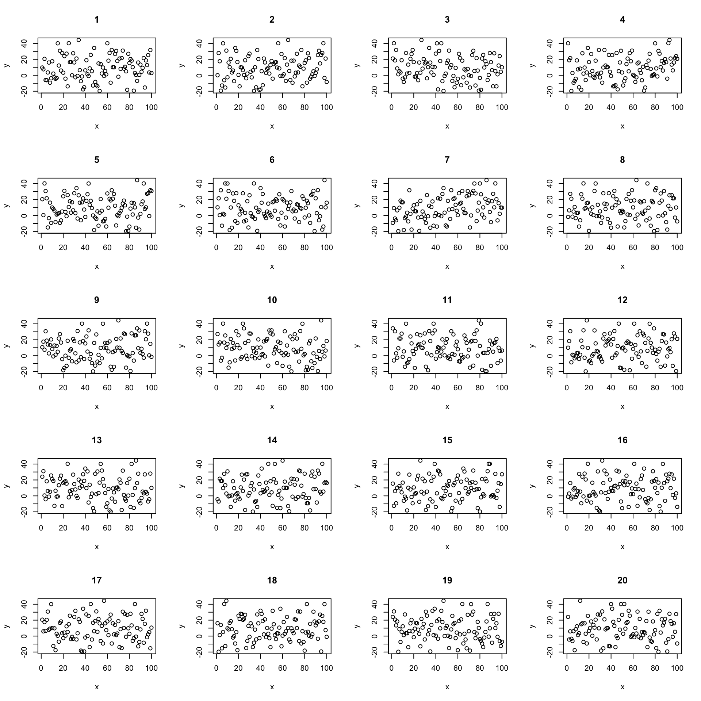
How do we calculate the lower and upper limits of the 95% confidence interval of the slope?
Recall that the \(t\)-value for a null hypothesis of slope of zero is defined as:
\[t = \frac{\hat\beta_1}{\hat\sigma^{(\beta_1)}}\]
The first step is to calculate the \(t\)-value that corresponds to a p-value of 0.05. This is the \(t\)-value that corresponds to the 97.5% quantile of the \(t\)-distribution with \(n-2\) degrees of freedom.
\(t_{0.975} = t_{0.025} = 1.96\), for large \(n\).
The 95% confidence interval of the slope is then given by:
\[\hat\beta_1 \pm t_{0.975} \cdot \hat\sigma^{(\beta_1)}\]
In our blood pressure example the estimated slope is 0.8240678 and the standard error of the slope is 0.0277096. We can calculate the 95% confidence interval of the slope as follows:
n <- 100
t_0975 <- qt(0.975, df = n - 2)
half_interval <- t_0975 * summary(mod1)$coef[2,2]
lower_limit <- coef(mod1)[2] - half_interval
upper_limit <- coef(mod1)[2] + half_interval
ci_slope <- c(lower_limit, upper_limit)
slope <- coef(mod1)[2]
slope Age
0.8240678 ci_slope Age Age
0.7690791 0.8790565 R can do all this for us:
2.5 % 97.5 %
0.7690791 0.8790565 Or we can do it using values from the coefficients table:
coefs <- summary(mod1)$coef
beta <- coefs[2,1]
sdbeta <- coefs[2,2]
beta + c(-1,1) * qt(0.975,241) * sdbeta [1] 0.7694840 0.8786516Interpretation: for an increase in the age by one year, roughly 0.82 mmHg increase in blood pressure is expected, and all true values for \(\beta_1\) between 0.77 and 0.88 are compatible with the observed data.
Confidence and Prediction Bands
Remember: If another sample from the same population was taken, the regression line would look slightly different.
There are two questions to be asked:
Which other regression lines are compatible with the observed data? This leads to the confidence band.
Where do future observations (\(y\)) with a given \(x\) coordinate lie? This leads to the prediction band.
Note: The prediction band is much broader than the confidence band.
Calculation of the confidence band
Given a fixed value of \(x\), say \(x_0\). The question is:
Where does \(\hat y_0 = \hat\beta_0 + \hat\beta_1 x_0\) lie with a certain confidence (i.e., 95%)?
This question is not trivial, because both \(\hat\beta_0\) and \(\hat\beta_1\) are estimates from the data and contain uncertainty.
The details of the calculation are given in Stahel 2.4b.
Plotting the confidence interval around all \(\hat y_0\) values one obtains the confidence band or confidence band for the expected values of \(y\).
Note: For the confidence band, only the uncertainty in the estimates \(\hat\beta_0\) and \(\hat\beta_1\) matters.
Here is the confidence band for the blood pressure data:
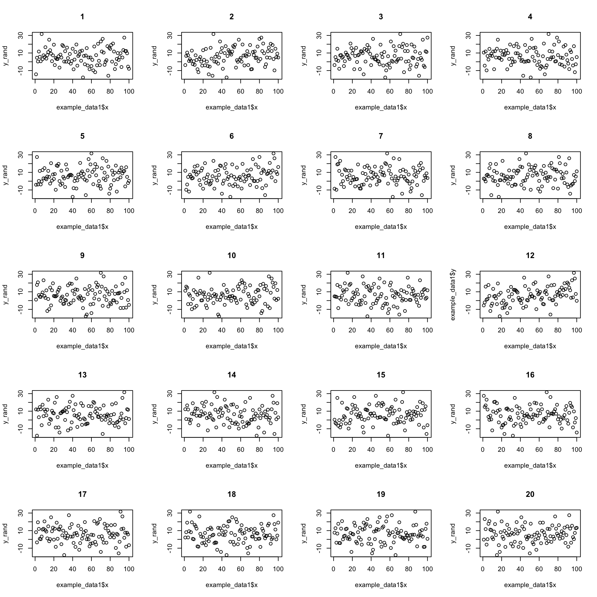
Very narrow confidence bands indicate that the estimates are very precise. In this case the estimated intercept and slope are precise because the sample size is large and the data points are close to the regression line.
Calculations of the prediction band
We can easily predicted an expected value of \(y\) for a given \(x\) value. But we can also ask w where does a future observation lie with a certain confidence (i.e., 95%)?
To answer this question, we have to consider not only the uncertainty in the predicted value caused by uncertainty in the parameter estimates \(\hat y_0 = \hat\beta_0 + \hat\beta_1 x_0\), but also the error term \(\epsilon_i \sim N(0,\sigma^2)\)}.
This is the reason why the prediction band is wider than the confidence band.
Here’s a graph showing the prediction band for the blood pressure data:
Another way to think of the 95% confidence band is that it is where we would expect 95% of the regression lines to lie if we were to collect many samples from the same population. The 95% prediction band is where we would expect 95% of the future observations to lie.
That is regression done (at least for our current purposes)
- Why use (linear) regression?
- Fitting the line (= parameter estimation)
- Is linear regression good enough model to use?
- What to do when things go wrong?
- Transformation of variables/the response.
- Handling of outliers.
- Goodness of the model: Correlation and \(R^2\)
- Tests and confidence intervals
- Confidence and prediction bands
Additional reading material
If you’d like another perspective and a deeper delve into some of the mathematical details, please look at Chapter 2 of Lineare Regression, p.7-20 (Stahel script), Chapters 3.1, 3.2a-q of Lineare Regression, and Chapters 4.1 4.2f, 4.3a-e of Lineare Regression